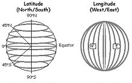

GPS Coordinates - A geographic coordinate system is a coordinate system that
enables every location on the Earth to be specified by a set of numbers, letters,
or symbols. A common choice of coordinates involve latitude and longitude.
Latitude is a geographic coordinate that specifies the north/south position of a point
on the Earth's surface. It is an angle which ranges from 0 degrees at the Equator
to 90 degrees (North or South) at the poles. Lines of constant latitude, or parallels,
run east/west as circles parallel to the equator.
Longitude is a geographic coordinate that specifies the east/west position of a point
on the Earth's surface. By convention, one of these, the Prime Meridian, which passes
through the Royal Observatory, Greenwich, England, was allocated the position of zero
degrees longitude. The longitude of other places is measured as the angle east or west
from the Prime Meridian.
